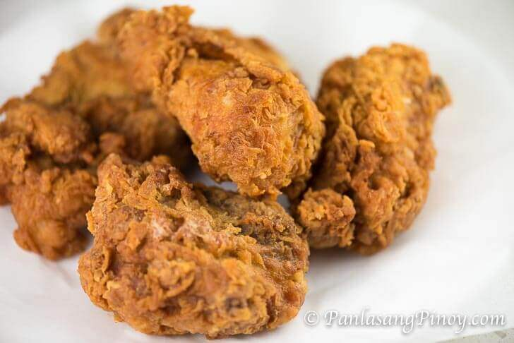

Home
Crispy Fried Chicken

Delicious Crispy Fried Chicken
Fried chicken is seen as a quintessential part of American cuisine. In the American South, especially, crispy fried chicken is a staple in many homes and restaurants. In fact, many restaurants and fast food chains boast their own trademark fried chicken recipes (KFC and Popeyes ring any bells?). This is something that has been imitated across the world, finding a home even in countries like ours; just think of Jollibee!
Ingredients
- 3 lbs. chicken cut into individual pieces
- 1 tablespoon salt
- 3 cups cooking oil
- 1 cup all-purpose flour
Steps
- Rub salt all over the chicken. Let it stay for 15 minutes.
- Heat the oil in a cooking pot.
- Prepare the batter. Start by pressing a fork on the chicken cube until it is completely squashed. Combine it with warm milk. Stir until well blended. Set aside.
- Combine flour, baking powder, garlic powder, salt, and ground black pepper. Mix well using a fork or a wire whisk. Set aside.
- Beat the eggs in a large mixing bowl. Add the milk mixture. Continue to beat until all the ingredients are all incorporated. Add half of flour mixture. Whisk. Add the remaining half and whisk until the texture of the batter becomes smooth.
- Dredge the chicken in flour and then dip in batter. Roll it again in flour until completely covered. Fry in medium heat for 7 minutes per side.
- Remove from the pot and put in a plate lined with paper towel. This will absorb the oil.
- Serve with ketchup or gravy.
- Share and enjoy!